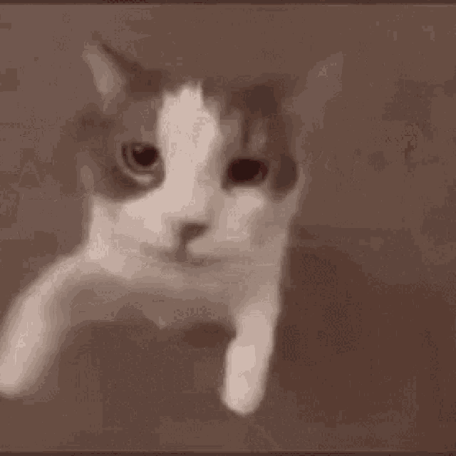
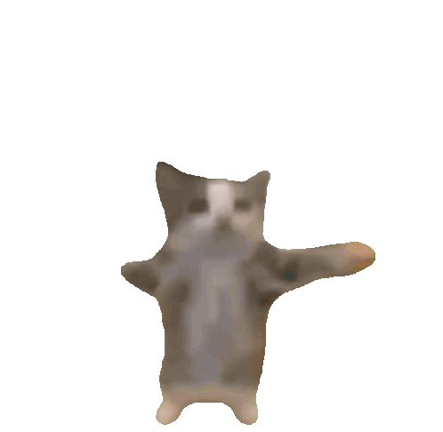

nossos momentos
toque nas setas (ou deslize!) para ver mais



Obrigado por fazer parte da minha vida... cada dia com você é um presente.
foto 1 de 4
toque nas setas (ou deslize!) para ver mais


Obrigado por fazer parte da minha vida... cada dia com você é um presente.
foto 1 de 4